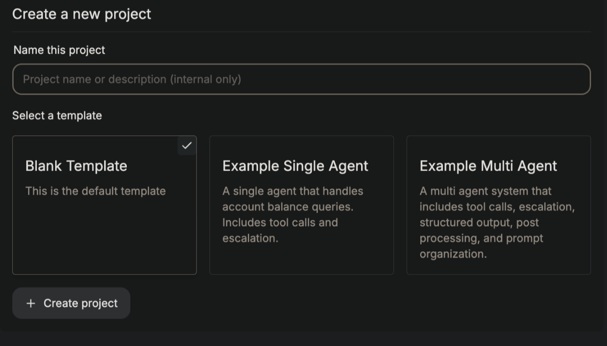
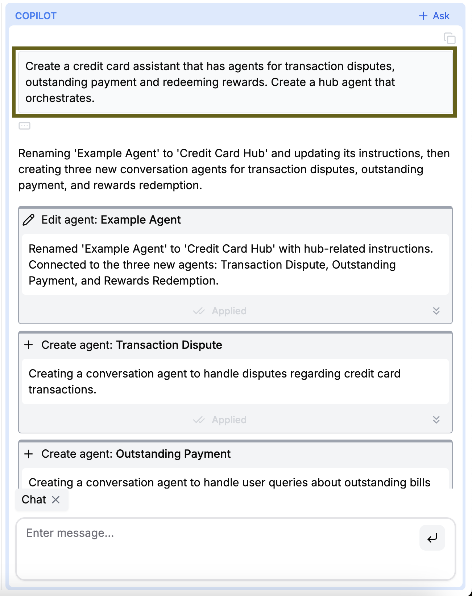
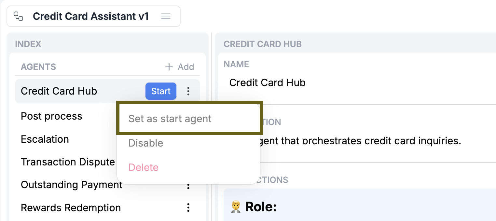
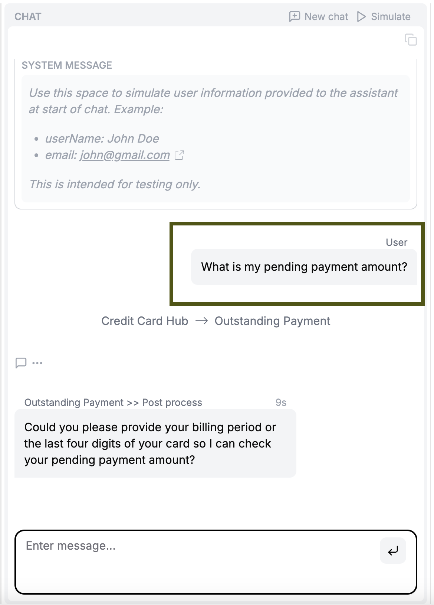

Using the Hosted App
- This is the developers guide to self-hosting the open-source version of RowBoat.
- Please see our Introduction page before referring to this guide.
- For direct installation steps, please head to the README of RowBoat's Github repo: @rowboatlabs/rowboat. This page provides more context about the installation process and the different components involved.
Overview
RowBoat's codebase has three main components:
| Component | Description |
|---|---|
| Agents | Python framework responsible for carrying out multi-agent conversations |
| Copilot | Python framework powering the copilot in RowBoat Studio |
| RowBoat | Frontend and backend services to power RowBoat Studio and Chat APIs |
These components are structured as separate services, each containerized with Docker. Running docker-compose up --build enables you to use the Studio in your browser, as well as stands up the APIs and SDK.
Prerequisites
All of these prerequistes have open-source or free versions.
| Prerequisite | Description |
|---|---|
| Docker | Bundles and builds all services |
| OpenAI API Key | Agents and Copilot services are powered by OpenAI LLMs |
| MongoDB | Stores workflow versions, chats and RAG embeddings |
| Auth0 Account | Handles user authentication and identity management for Studio |
Refer to our Github Readme for Prerequisites to set up prerequisites.
Setting up
Refer to our Github Readme for Local Development to set up Studio, Chat API and SDK via docker-compose.
Testing Studio
-
Once you are set up, you should be able to login to the Studio (default local URL: http://localhost:3000) via Auth0's login options (Gmail, Github etc.)
-
Once in Studio, create a new blank project or use one of the example templates: 
-
Use the copilot to help you build agents: 
-
Ensure that the correct agent is set as the "start agent": 
-
Test out a chat in the playground to verify the agents' behavior: 
Testing the Chat API
You can use the API directly at http://localhost:3000/api/v1/
- Project ID is available in the URL of the project page
- API Key can be generated from the project config page at /projects/<PROJECT_ID>/config
Below is an example request and response. Modify the user message in the request, based on your example project.
Request:
curl --location 'http://localhost:3000/api/v1/<PROJECT_ID>/chat' \
--header 'Content-Type: application/json' \
--header 'Authorization: Bearer <API_KEY>' \
--data '{
"messages": [
{
"role": "user",
"content": "What is my pending payment amount?"
}
]
}'
Response:
The last message in messages is either a user-facing response or a tool call by the assistant.
{
"messages": [
{
"sender": "Credit Card Hub",
"role": "assistant",
"response_type": "internal",
"content": null,
"created_at": "2025-02-01T06:55:47.843909",
"current_turn": true,
"tool_calls": [
{
"function": {
"arguments": "{\"args\":\"\",\"kwargs\":\"\"}",
// Internal tool calls are used to transfer between agents
"name": "transfer_to_outstanding_payment"
},
"id": "call_7jGpwpVvzhZFOyRgxHFkdOdU",
"type": "function"
}
]
},
{
"tool_name": "transfer_to_outstanding_payment",
"role": "tool",
"content": "{\"assistant\": \"Outstanding Payment\"}",
"tool_call_id": "call_7jGpwpVvzhZFOyRgxHFkdOdU"
},
{
"sender": "Outstanding Payment",
"role": "assistant",
// Response is not user-facing, to enable further post processing
"response_type": "internal",
"content": "Sure, could you provide the last four digits of your card or your registered mobile number so I can look up your pending payment amount?",
"created_at": "2025-02-01T06:55:49.648008",
"current_turn": true
},
{
"sender": "Outstanding Payment >> Post process",
"role": "assistant",
// Response is user-facing
"response_type": "external",
"content": "Sure, please provide the last four digits of your card or your registered mobile number so I can check your pending payment amount.",
"created_at": "2025-02-01T06:55:49.648008",
"current_turn": true
}
],
"state": {
// .. state data
}
}
Testing the Python Chat SDK
pip install rowboat
Modify the user message in messages, based on your example project.
from rowboat import Client
client = Client(
host="http://localhost:3000",
project_id="<PROJECT_ID>",
api_key="<API_KEY>" # Generate this from /projects/<PROJECT_ID>/config
)
# Simple chat interaction
messages = [{"role": "user", "content": "What is my pending payment amount?"}]
response_messages, state = client.chat(messages=messages)
The last message in response_messages is either a user-facing response or a tool call by the assistant.